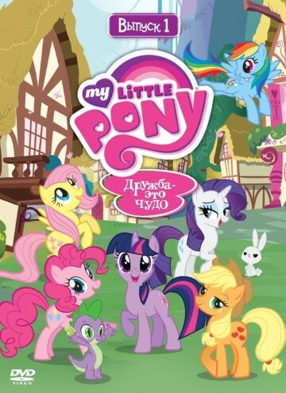

Представляем вашему вниманию подборку зарубежные мультфильмов.
Топ 10 лучших мультфильмов:
Жанр: мультфильм, комедия, приключения, семейный, спорт, мультсериал
Режиссёр: Джэми Уитни, Чарльз Е. Бастьен
В ролях: Каллан Холли, Деван Коэн, Рон Пардо, Сэмюэл Фараси, Алекс Торн, Caroline Johnson,
Габриэла Милани, Итало Луис, Макс Калинеску, Дрю Дэвис
Этот красочный и добрый мультипликационный сериал определенно подойдет для просмотра самым маленьким телезрителям, которые впитывают в себя все, что видят вокруг, и пока еще только учатся отличать плохое от хорошего и добро ото зла. Да и просто веселые приключения привлекут внимание любого ребенка. Героями данного мультсериала становятся животные, что очень нравится маленьким деткам, ведь наблюдать за зверями даже интереснее, чем за людьми. Также здесь есть еще один главный герой - отважный мальчик по имени Зик Райдер. Этот десятилетний малыш уже так умен, хитер и талантлив, как ни один ребенок в его возрасте. Помимо Зика Вашему ребенку придется подружиться с милыми и такими же маленькими, как и он сам, щенятами. Шестерка щенят - это отважный отряд спасателей, который выступает вместе с Зиком. Эти шесть храбрых и ловких щенят вместе в хитрым мальчиком, который отменно разбирается в электрике и технике, образуют команду спасателей под названием Щенячий патруль. Жизнь этой команды наполнена приключениями и опасностями, которые Зик и щенята легко решают и обходят, попутно помогая другим людям, зверятам и даже технике, например, они с легкостью помогут малышу - котенку, который по неосторожности залез на дерево и там застрял, или поезду, который вдруг сошел с рельс.

Жанр: мультфильм, фэнтези, комедия, семейный, мультсериал
Режиссёр: Винсент Уоллер, Шерм Коэн, Дэйв Каннингэм
В ролях: Том Кенни, Роджер Бампасс, Билл Фагербакки, Клэнси Браун, Мистер Лоуренс,
Ди Брэдли Бейкер, Джилл Тэлли, Кэролин Лоуренс, Сирена Ирвин, Лори Алан
Так и хочется пропеть: «Кто проживает на дне океана? Губка Боб - квадратные штаны!» самый веселый и беспечный герой из всех современных мультсериалов, который будет радовать любого зрителя от приключения к приключению. Губка Боб действительно проживает на дне океана, в городе Бикини – Боттом, где жизнь кипит и бьет ключом, совсем как на поверхности. Наш герой ходит на работу, как миллионы обычных людей, вставая каждое утро по звонку будильника. Только в отличие ото всех, Губка Боб свою работу обожает. Еще бы, каждый день он делает вкуснейшие краббсбургеры в кафе у алчного, но доброго Мистера Краббса. А коллегой у Боба является зануда Сквидворд, напрочь лишенный жизнерадостности, готовый отдать все за тишину и уединение. Но, поскольку Сквидворд не только коллега, но и сосед Боба, о спокойствии ему приходится только мечтать, ведь Боб вместе со своим лучшим другом – морской звездой Патриком, сведут с ума любого. Два лучших друга готовы днями напролет придумывать себе приключения и заряжать позитивом всем вокруг. Эти два чудака умудрились подружиться даже с воинственной белкой по имени Сэнди, которая прибыла прямиком с суши, из Техаса. Персонажи колоритны, остроумны и харизматичны, а это значит, что соскучиться с ними просто невозможно.
Жанр: мультфильм, комедия, семейный, мультсериал
Режиссёр:Чак Джонс, Джозеф Барбера, Уильям Ханна, Джин Дейч
В ролях: ---
---
Весь сюжет мультсериала ограничивается тем, что на протяжении всех серий два главных героя – мышонок Джерри и кот Том гоняются друг за другом. Точнее, Том гоняется, а Джерри либо прячется, либо отбивается, либо строит коту коварные козни. Пока тот ничего не подозревает. Наши герои большую часть своего времени проводят в доме, где живет хозяйка Тома, лицо которой просто не возможно увидеть ни в одной серии, и находится норка Джерри, где он может спрятаться в любой момент. Но, помимо этого места действия, наши друзья могут оказаться и на острове, и на улице, и вообще, где угодно. Помимо всего прочего, у каждого из них есть и другие помощники и соперники, что будут встречаться зрителю на протяжении всех серий мультсериала. Иногда нашим героям удается очень даже неплохо уживаться друг с другом, особенно, когда требуется объединиться против кого–то.
Жанр: мультфильм, мюзикл, фэнтези, комедия, мелодрама, приключения, семейный
Режиссёр:Крис Бак, Дженнифер Ли
В ролях: Кристен Белл, Идина Мензел, Джонатан Грофф, Джош Гад, Сантино Фонтана,
Алан Тьюдик, Киран Хайндс, Крис Уильямс, Стивен Дж. Андерсон, Майа Уилсон
Действия мультфильма будут происходить в королевстве под названием Эренделл. Здесь проживают король и королева, которые занимаются воспитанием своих двоих любимых дочерей. Но только как они не старались, так и не смогли освободить старшую от магических сил которыми она обладала, она могла создать все что угодно, но при этом это было либо изо льда, либо со снега. Однажды, когда она играла со своей младшей сестрой по имени Анна. Юная волшебница, сама того не желая, попала заклинанием Анне прямо в голову. Эльза сильно испугалась и сразу же побежала к своим родителям просить помощи. Родители тоже сильно перепугались и они понимают, что помочь в этой беде им могут только тролли. У них была старейшина Бэбби, и только с ее помощью удалось спасти бедную Анну, девочке пришлось стереть все воспоминания, которые были связанны с магией ее сестры. При этом Эльзе сообщают о том, что ей необходимо как можно скорее научиться контролировать свои способности, иначе это все в итоге может привести к большим проблемам. Король и королева понимают, какой вред они могут причинить всем окружающим, и поэтому принимают решение запереться в своем замке вместе с дочерьми. Но наступает такой момент, когда Эльзе необходимо покинуть замок, только вот к чему это всё приведет?

Жанр: мультфильм, фантастика, боевик, драма, комедия, приключения, семейный, мультсериал
Режиссёр: Сиро Ниели, Алан Ван, Майкл Чанг
В ролях:Шон Эстин, Грег Сайпс, Роб Полсен, Мэй Уитман, Хун Ли, Сет Грин,
Кевин Майкл Ричардсон, Джош Пек, Джейсон Биггз, Нолан Норт
Этот замечательный и интересный детский мультсериал до сих пор не дает покоя ни поклонникам, ни создателям фильмов, так как в последнее время вышла уже не одна версия полнометражного фильма про черепашек – ниндзя. Сюжет этого мультсериала заключается в следующем: мутировавшие черепашки однажды получают суперсилу, которая в дальнейшем помогает им избавлять Нью – Йорк от злодеев и преступников. Главными героями мультсериала являются, собственно, черепашки. Всего их четверо: Донателло, Микеланджело, Рафаэль и Леонардо. Под руководством своего учителя – крысы по имени Сплинтер черепашки совершенствуют свою силу и учатся боевым искусствам. При этом, наши веселые парни живут в местной канализации и не прочь полакомится пиццей. У черепашек – ниндзя есть главный враг по имени Шредер, с помощью которого и творится все главное зло в Нью – Йорке. А помогает нашим героем очаровательная девушка по имени Эйприл. Девушка не раз и сама оказывала помощь, и черепашки не раз помогали ей.

Жанр: мультфильм, мюзикл, фэнтези, комедия, семейный, мультсериал
Режиссёр: Джэйсон Тиссен, «Биг» Джим Миллер, Джеймс Вуттон
В ролях:Эшли Болл, Табита Сен-Жермен, Андреа Либман, Тара Стронг, Кэти Уэслак,
Николь Оливер, Мишель Кребер, Питер Нью, Клер Маргарет Корлетт, Мадлен Питерс
«My Little Pony» - мультсериал, который завоевал уже целую армию самых маленьких поклонников. Кстати говоря, мультфильм рассчитан на самый маленьких детишек, преимущественно, на девочек, для которых вся эта милота, происходящих на экране, будет весьма и весьма привлекательна. Судя по названию мультфильма, тема ясна еще до просмотра, и это, конечно, дружба и ее значение в жизни каждого. Главным героем здесь является маленькая единорожка по имени Сумеречная Искорка. Эта малышка настолько увлечена учебой и чтением различных книжек, что для нее ничего в мире больше и не существует. Поэтому ее учительница, забеспокоившись, дает Искорке важное задание – найти себе верных и настоящих друзей. Тогда наша героиня и отправляется на поиске друзей и позже встречает пятерых новых друзей, среди которых встречаются и самые веселые и добродушные, и те, кто уже познал предательство. Теперь дружная пятерка начинает свои захватывающие приключения, где они вместе решают накопившиеся проблемы и учат маленького ребенка правильно смотреть на мир, дружбу и людей вообще.
Жанр: мультфильм, фэнтези, комедия, детектив, приключения, семейный, мультсериал
Режиссёр: Джо Питт, Джон Аошима, Мэтт Брэли
В ролях: Джейсон Риттер, Алекс Хирш, Кристен Шаал, Линда Карделлини, Кевин Майкл Ричардсон,
Мэтт Чэпман, Кари Уолгрен, Джон Ди Маджио, Кит Фергюсон, Грегг Теркингтон
Изначально этот американский анимационный сериал был предназначен для взрослых телезрителей, но в последствие переквалифицировался и в детский, что говорит лишь о том, что вы можете провести время со своим ребенком и за просмотром данного мультфильма. Все действие мультсериала происходит в городе под названием Гравити Фолз, куда на летние каникулы приезжают наши главные герои. Собственно, эти самые герои – близнецы, брат и сестра по имени Диппер и Мэйбл Пайнс. Дети приезжают на лето в этот городок, чтобы погостить у своего двоюродного дедушки, поначалу даже не предполагая, чем для них обернуться каникулы. Через некоторое время после своего приезда наши главные герои потихоньку начинают скучать от тихого и спокойного городка, пока однажды брат не находит таинственный дневник, автор которого остался неизвестным. В этом дневнике описаны все чудеса и секреты города Гравити Фолз, который оказался не таким простым, как показался сначала, а волшебным и таинственным, таящим в себе много сверхъестественного. Теперь ребята с воодушевлением отправляются на новое исследование городка, который уже не так безобиден и прост, как раньше: теперь ребят всюду может подстерегать опасность, магические тайны и непонятные существа.
Жанр: мультфильм, короткометражка, семейный, мультсериал
Режиссёр: Марк Бэйкер, Невилл Эстли, Йорис ван Хюльзен
В ролях: Джон Шпаркс, Морвенна Бэнкс, Ричард Райдингс, Оливер Мэй, Элис Мэй,
Лили Сноуден-Файн, Мэг Холл, Дэвид Грэм, Фрэнсис Уайт, Cecily Bloom
О, кто не слышал об этом современном мультсериале? Даже те, кто никогда не видел ни одной серии, все равно наслышаны о некой свинке по имени Пеппа. Свинка Пеппа - это маленькая свинка, которая живет в красивом доме вместе со своими родителями, именуемыми Свинка Мама и Папа Свин. Помимо них, у Пеппы есть и младший брат по имени Джордж. Сесья Пеппы – обычная семья, каких миллионы, среди обычных жителей планеты, то есть, людей. Свинка Пеппа - обычная девочка пяти лет, которая, как и все обычные дети, любит гулять и веселиться. Но, помимо этого, Пеппа еще только познает окружающий мир, законы природы, дружбы и взаимоотношений. Также у Пеппы есть подружка, относящаяся к другому классу животных. Девочки также, как и обычные дети, ссорятся и мирятся, гуляют и играют вместе, болтают по телефону и катаются на качелях. Вместе со свинкой Пеппой, ее родителями и их друзьями Ваш ребенок будет познавать устройство окружающего мира, все тонкости отношений между людьми, замаскированными под отношения зверей. Все серьезные вопросы будут разбираться с ноткой юмора, что добавит вашему ребенку интереса к просмотру. И, конечно же, каждая серия будет обеспечена счастливым концом. Приключения будут интересными.
Жанр: мультфильм, фантастика, боевик, комедия, приключения, мультсериал
Режиссёр: Алекс Сото, Филип Пиньотти, Рой Бурдин
В ролях: Дрейк Белл, Чи МакБрайд, Оги Бэнкс, Логан Миллер, Грег Сайпс, Кейтлин Тейлор Лав,
Дж.К. Симмонс, Мэтт Лантер, Мисти Ли, Том Кенни
И снова, и снова знакомый нам Марвел, комиксы и добрые супергерои, ведущие борьбу с самыми могущественными злодеями современности. На этот раз главным героем мультсериала становится Человек–Паук. Здесь мы не увидим истории его жизни или становление его как супергероя. Нет, в своем паучьем обличии Питер провел уже полгода и получил предложение пройти тренировочные курсы для увеличения своей силы и навыков. Во время одного из сражений оказывается так, что Человеку–Пауку оказали помощь агенты знаменитого подразделения Щ.И.Т. поработав с ним, и поняв, что супергерой во время своих боев наносит окружающему миру огромный ущерб, агенты предлагают свой тренировочный курс. На что получают решительный отказ. Только решение приходится очень быстро сменить: после нападения Человек – Паук понял, что нуждается сейчас в том, чтобы подтянуть свои силы. Теперь Человек-Паук начинает работать в команде с другими супергероями, уничтожая зло и пакость, которые творятся в его родном городе. Тут нас ждут различные приключения супергероя, с вытекающими оттуда битвами и сражениями другие события из жизни, как Питера Паркера, так и Человека–Паука. Например, в одной из серий Человек–Паук получает возможность быть железным пауком, в другой – спасает Халка от всеобщего гнева, обращая внимание общественности на настоящую разрушительную силу, и много другое.
Жанр: мультфильм, комедия, приключения, семейный, мультсериал
Режиссёр: Боб Хэчкок, Джеймс Т. Уолкер, Алан Заслов
В ролях: Алан Янг, Расси Тейлор, Чак МакКанн, Теренс МакГоверн, Фрэнк Уэлкер,
Хэл Смит, Джоан Гербер, Хэмилтон Кэмп, Джун Форэй, Питер Каллен
Мультимиллионер Скрудж Макдак живет вместе со своими внучатыми племянниками-озорниками Билли, Вилли и Дилли. Эта веселая утиная семейка постоянно попадает в передряги благодаря дядюшке Скруджу, а племянники помогают ему справиться с проблемами. Мальчишки жили со своим дядей Дональдом Даком, но у него возникли дела и Дональд оставляет их на попечение Скруджа. Живут они в огромном доме дядюшки, в котором также обитают няня миссис Клювдия вместе со своей внучкой уточкой Поночкой и дворецкий Дакфорд. Скрудж обладает большим состоянием, которое он хранит в большом сейфе. Естественно, такой куш - лакомый кусочек для большого количества злодеев. Раз за разом Скруджу приходится защищать свои бесценные сокровища от посягательств. Также в большой опасности находится Первый Гривенник Скруджа, многие считают, что именно в нем заключается секрет заработка и успеха. Вот и приходится мультимиллионеру Скруджу бороться с аферистами «Братьями Гавс», со злой волшебницей Магикой де Гипсон и богачем Флинтхартом Гломгольдом, который мечтает стать наибогатейшим в мире. Но у Скруджа, не смотря на его скупость и жесткость в делах, множество друзей, которые всегда придут на помощь, мультсериал покажет их невероятные приключения.